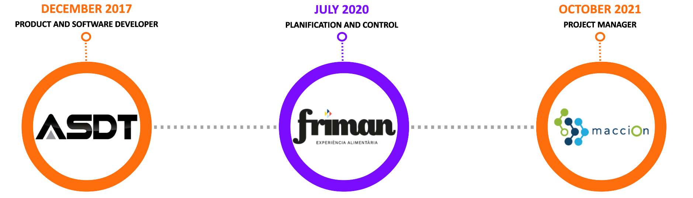

Work experience

ASDT Systems Europe
I started my professional career at ASDT Systems. It is a technology company located in Sallent (Barcelona). Their speciality is the creation of countermeasure systems against unmanned aerial vehicles. The journey I had in the company was very varied. I started in December 2017 with the programming of radio frequency jamming systems and I finished in September 2019 due to the incompatibility of the work with my university studies. Below is a description of the main projects in which I participated and the role I played in each of them.
Portable UAV neutralisation devices
#RF #MICROCONTROLLER #C++ #CADCAM #DJI #FUSION360 #PCB
The first project in which I was involved in was the programming of handheld radio frequency jamming equipment. One of the company's most distinctive products was the hand-held jamming gun. These ergonomic devices enabled the targeted jamming of drones. Their main purpose was to enable law enforcement officers to stop potential attacks on critical infrastructure. These systems needed a graphical user interface so that the internal systems could be controlled by the people using the systems. My job was to program the microcontroller that triggered the jamming mechanisms and showed the user the status of the device at any given moment. In addition to the software development work, I was actively involved in the design and assembly of the electronic components that were part of the inhibition actuation and control system. Some of the metal components of the device needed to be modelled in order to be part of the gun. Another of my tasks, not so much related to software development, was the start-up of a cnc milling machine and the creation of CAM patterns with the designs generated by the mechanical department.
Another product we offered was stationary detection and automatic inhibition systems. In addition to the jamming technology, these devices also had a real-time drone detection infrastructure. This system was based on DJI's AeroScope device. The combination of the two features offered the possibility of having a portable device that could disable drones automatically and without the need for a law enforcement officer to be present at the time of the hostile aircraft incursion. My task in this product was to connect the dji technology to the sendes ecosystem to enable communication and information transfer between systems.
Ultralight aircraft automatic fuel station
#SOFTWARE #FULLSTACK #JAVA #SQL #RESTAPI
The operational headquarters of ASDT at that time was located at the Pla de Bages airfield because of the operational advantages of having a large airspace for flight testing. Once the portable jammers project reached the maintenance phase, I got involved in my second job in the company. Pla de Bages is a flying field for ultralight aircraft. At that time the aeroclub did not offer its customers an aircraft refuelling service. For this reason, we decided to create an automatic petrol station so that pilots could refuel at will automatically and without the need to interact with a human.
The project consisted in the development of an end-to-end architecture. First we designed the backend. A php server with a MySQL database that allowed the management of users and repostages. The server was hosted on a private server and offered a REST API so that client applications could communicate with it to perform read and write operations. The client consisted of an application written in JAVA that allowed the control of operations by users and the printing of receipts.
The three figures below show the graphical user interface installed on a embedded computer in the petrol station. The first picture shows the registration window. Each customer was given a user ID that was linked to an RFID card. A small RFID reader allowed the user to swipe the card and authenticate himself to fill up with petrol. The electronics that was installed allowed the connection and disconnection of the fuel pump and the counting of the elapsed litres of fuel. Once the user had finished refuelling, the operation was registered to his account so that he could proceed to pay the receipt.

DTU Manager
#SOFTWARE #INFORMATIONSYSTEMS #IOT #DATAMINING #SENSORMESH #INFORMATIONTECHNOLOGIES
Although ASDT had the capacity to generate and collect real-time airspace data, we did not offer a data exploitation service. A client approached us with the need to monitor drone flights and access the information generated by our sensors in real time. We decided to create a new product line that consisted of creating a SAAS for monitoring air spaces in real time. This grew into an information system with several integrated technologies and we called it DTU Manager. It was my last but most complete project at ASDT.
As I explained, DTU Manger was born to create an environment to exploit the data generated by the drone detection sensors. To achieve this, an end-to-end infrastructure was created containing all the functionalities of a conventional software architecture. A central server was created to provide operational coverage to clients without special needs. This server was in charge of receiving, processing and storing the information from all the nodes located in the national territory. A user registration system made it possible to create associations between clients and sensors to allow access only to the information generated by specific devices. The figure in the picture shows a screenshot of the graphical interface provided to users so that they could view drone flights in real time.
As the product was aimed at protecting critical state infrastructures, some of the customers had very specific information privacy requirements. For that reason the server could be installed on promise to run in local environments. The central figure shows the representation of the information flow between 5 detectors located in a city and the central information management server. For confidentiality reasons I cannot provide much more detailed information about the project but in the figure on the right, for example, you can see the heat map generated by the flight of drones in an area of the city of Barcelona in a period of one month.
Friman Logistics
Friman is a company that has been dedicated to the distribution of temperature-controlled food for the HORECA channel in Catalonia for more than 50 years. It is a medium-sized family company with just over 200 employees. Like a large part of the business network in Catalonia, Friman is immersed in a profound process of transformation in all its filelds. The digital market in which we currently find ourselves is forcing companies to redesign a large part of the supply chain processes in order to create competitive business models.
Technology is accelerating change in the society in which we live. For this reason, it has become a fundamental pillar in any transformation process. In a global world in which information is becoming democratised and information asymmetry is being drastically reduced, having an up-to-date, robust and secure information system has become the basis for having a data management ecosystem that allows for the organised exploitation of data. Having data at hand in decision-making processes is what will allow organisations to differentiate themselves from the competition both in terms of improving customer relationships and reducingç inefficiencies in any of the processes.
My tasks were mainly focused on the Operations department. This is responsible for the functioning of the logistics of the whole business. This includes all processes related to frozen storage management, food distribution management and procurement planning. I joined the planning and control department with the objective of improving, firstly, the relationship of users with technology and information, secondly, the technological infrastructure of the department and, thirdly, the exploitation of the data generated by the daily operations.
Friman's information system is made up of three types of applications. Firstly, organisational, office automation and document management applications. Secondly, by transactional applications dedicated to the support of the daily operations in all the processes of the company and lastly, a datawarehouse in charge of offering an information management environment to facilitate its accessibility and exploration from the analytical point of view. My career at Friman was mainly based on the study and optimisation of transactional and analytical information systems. I will now explain in more detail the work developed.